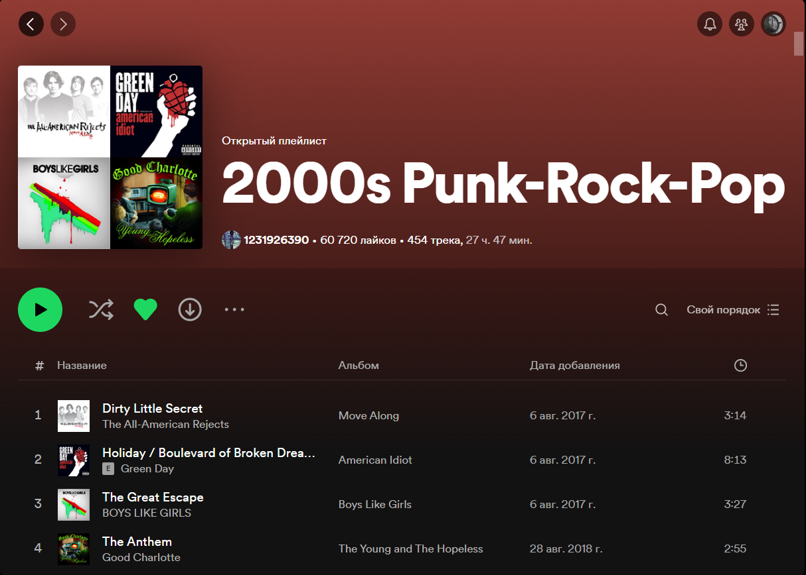
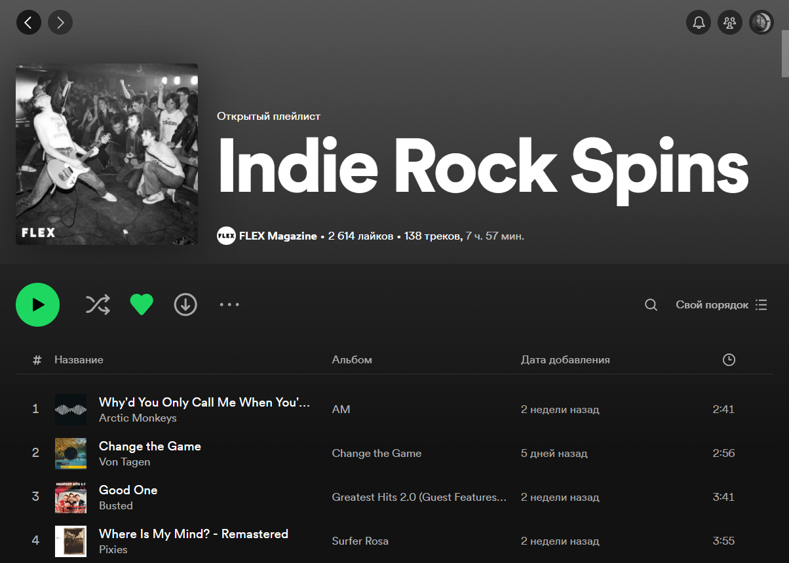
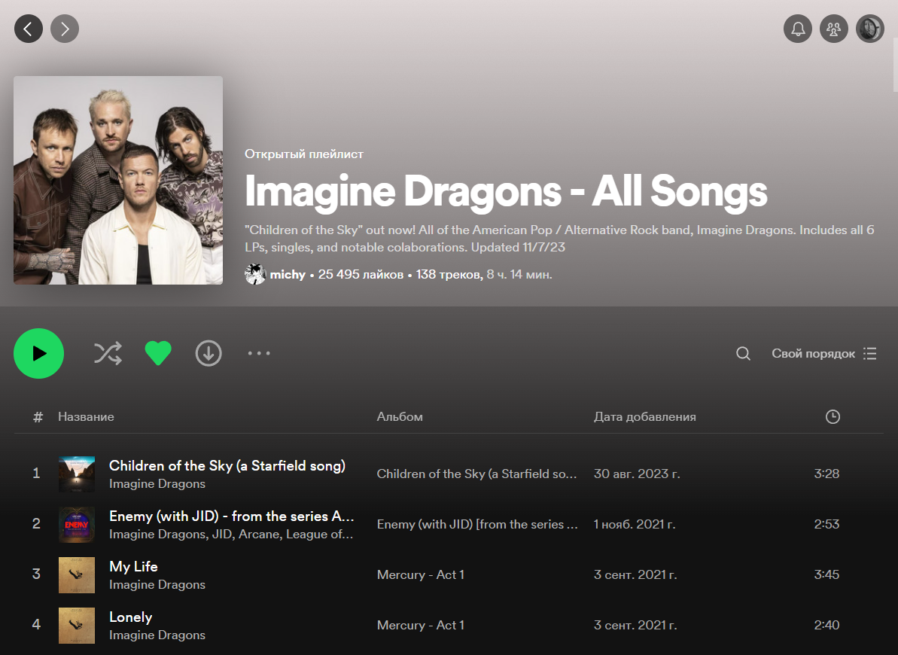
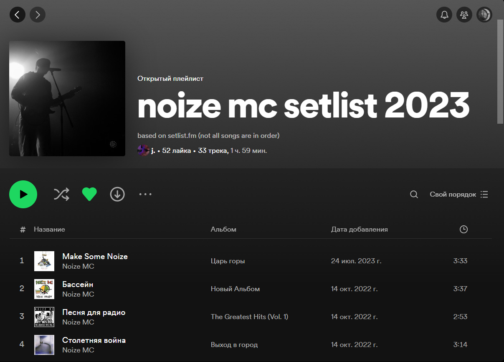
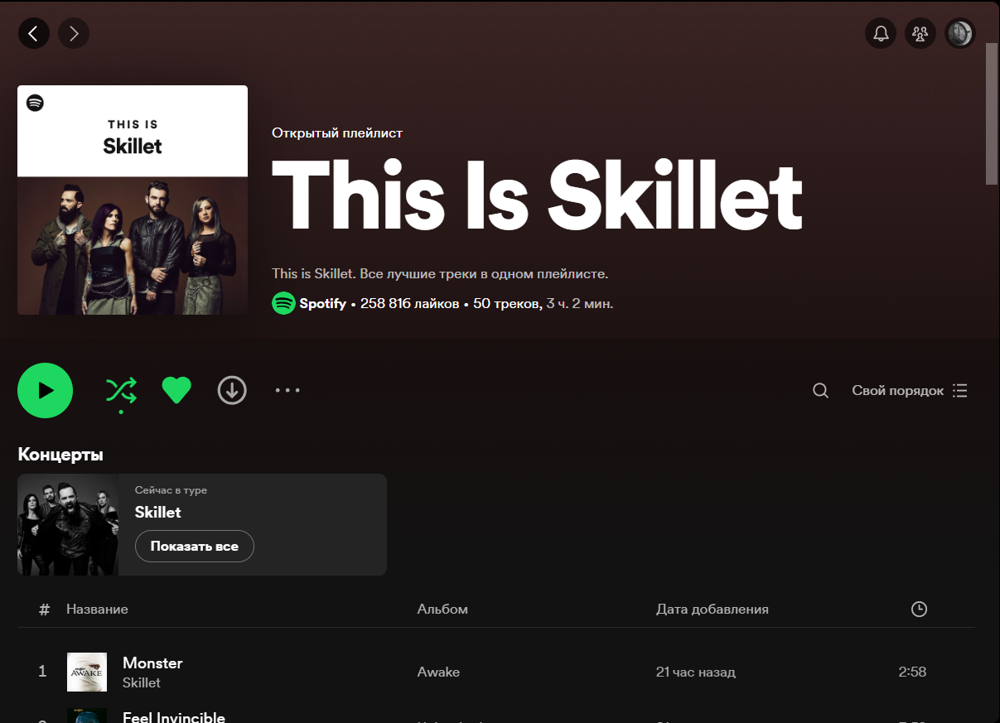
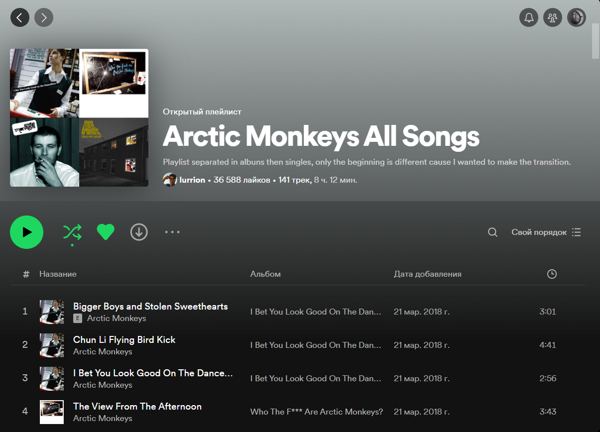

Панк-рок как и субкультура панка сформировались почти одновременно в середине 1970-х гг. в США и Великобритании. В стилистическом плане к тому времени уже были записи, которые вполне можно отнести к панк-року, несмотря на то, что они были сделаны в иной музыкальной манере. В настоящее время эти записи принято условно называть прото-панком: к ним относятся первые альбомы «Velvet Underground» (из неё вышел Лу Рид) и «Stooges», руководимые Игги Попом. С точки зрения чисто музыкального формата звучание панк-рока некоторыми специалистами отслеживается вплоть до песни «Kinks» — «You Really Got Me» 1964 года.
С начала 90-х годов популярность панк-рока растет благодаря творчеству таких коллективов, как Green Day, Offspring, Pennywise и Rancid, сперва в США, а затем и в Европе. Отношение к этим коммерчески весьма успешным группам в среде панк-рокеров неоднозначное. С одной стороны есть мнения, что эти коллективы в первую очередь заинтересованы в коммерческом успехе своей музыки. Согласно этой позиции такие группы в погоне за прибылью «распродают» панк и его идеалы. С другой стороны есть мнения, что творчество этих групп способствует популяризации идей панк-рока, которая положительно влияет на преобразование общества.
Douleur
Музыка помогает нам выразить свои чувства, пережить трудные моменты и найти утешение. Она может быть источником вдохновения и мотивации, помочь сосредоточиться и расслабиться. Музыка сопровождает нас на протяжении всей нашей жизни, делая ее ярче и насыщеннее.

Инди-рок (англ. Indie rock) — жанр альтернативного рока, существующий преимущественно в андерграунде, в независимом информационно-коммерческом пространстве. Берет свое название от английского слова «независимый» (англ. independent). Это не своеобразный отдельный стиль музыки, но обобщающий термин для широкого диапазона музыкантов и стилей, объёдинённых причастностью к андерграунду, контркультуре, и (обычно) имеющих некоторое отношение к рок-музыке.

В мире музыки есть множество исполнителей, которые оставляют неизгладимый след в сердцах слушателей. Некоторые из них занимают особое место в наших сердцах из-за уникальности их музыки, личностей или историй.
Imagine Dragons - американская рок-группа, основанная в Лас-Вегасе в 2008 году. В состав группы входят Дэн Рейнольдс (вокал, ритм-гитара), Бен Макки (лидер-гитара), Уилл Толлесон (бас-гитара) и Дэн Платцман (ударные).
Группа получила известность благодаря своему дебютному альбому “Night Visions”, выпущенному в 2012 году. Альбом стал платиновым в США и золотым в Канаде и Великобритании. Синглы “Radioactive” и “Demons” с этого альбома стали международными хитами.
В 2015 году Imagine Dragons выпустили свой второй альбом “Smoke + Mirrors”, который также стал успешным. Синглы с этого альбома, такие как “I Bet My Life” и “Thunder”, также стали популярными.
Imagine Dragons известны своими живыми выступлениями, на которых они часто используют световые шоу и пиротехнические эффекты. Они также активно участвуют в благотворительности, жертвуя часть своих доходов на помощь больным детям.
Группа получила известность благодаря своему дебютному альбому “Night Visions”, выпущенному в 2012 году. Альбом стал платиновым в США и золотым в Канаде и Великобритании. Синглы “Radioactive” и “Demons” с этого альбома стали международными хитами.
В 2015 году Imagine Dragons выпустили свой второй альбом “Smoke + Mirrors”, который также стал успешным. Синглы с этого альбома, такие как “I Bet My Life” и “Thunder”, также стали популярными.
Imagine Dragons известны своими живыми выступлениями, на которых они часто используют световые шоу и пиротехнические эффекты. Они также активно участвуют в благотворительности, жертвуя часть своих доходов на помощь больным детям.

Noize MC - российский хип-хоп исполнитель, настоящее имя которого Иван Алексеев. Он начал свою карьеру в 1990-х годах и с тех пор выпустил множество альбомов и синглов.
Noize MC известен своими политически заряженными текстами и остроумными рифмами. Он также является активным участником социальных сетей и часто делится своими мыслями и взглядами с поклонниками.
Алексеев также известен своими живыми выступлениями, которые часто включают в себя интерактивные элементы с публикой. Он также активно сотрудничает с другими музыкантами и артистами, включая таких знаменитостей, как Сергей Шнуров и Федор Бондарчук.
Несмотря на свою популярность, Алексеев остается скромным и честным артистом, который ценит своих поклонников и старается быть доступным для них.
Noize MC известен своими политически заряженными текстами и остроумными рифмами. Он также является активным участником социальных сетей и часто делится своими мыслями и взглядами с поклонниками.
Алексеев также известен своими живыми выступлениями, которые часто включают в себя интерактивные элементы с публикой. Он также активно сотрудничает с другими музыкантами и артистами, включая таких знаменитостей, как Сергей Шнуров и Федор Бондарчук.
Несмотря на свою популярность, Алексеев остается скромным и честным артистом, который ценит своих поклонников и старается быть доступным для них.

Skillet - американская христианская рок-группа, образованная в Мемфисе, штат Теннесси, в 1995 году. Первоначально группа называлась “Skillet” и состояла из Джона Купера (вокал), Korey Cooper (ударные), Seth Morrison (гитара) и Jen Ledger (бас). В 1999 году группа изменила свое название на “Skillet”.
С тех пор Skillet выпустила семь студийных альбомов, один концертный альбом и два сборника. Их последний альбом, “Unleashed”, был выпущен в 2016 году. Skillet известен своими мощными живыми выступлениями и энергичными песнями, которые затрагивают темы веры, надежды и любви.
С тех пор Skillet выпустила семь студийных альбомов, один концертный альбом и два сборника. Их последний альбом, “Unleashed”, был выпущен в 2016 году. Skillet известен своими мощными живыми выступлениями и энергичными песнями, которые затрагивают темы веры, надежды и любви.

Arctic Monkeys - британская инди-рок-группа, образовавшаяся в 2002 году в Хай Грин, Абердиншир. В настоящий момент группа состоит из вокалиста и гитариста Алекса Тёрнера, гитариста Джейми Кука, барабанщика Мэтта Хелдерса и басиста Ника О’Мэлли.
Arctic Monkeys выпустили свой дебютный альбом “Whatever People Say I Am, That’s What I’m Not” в 2006 году, который стал платиновым в Великобритании и получил множество положительных отзывов критиков. С тех пор группа выпустила еще четыре студийных альбома: “Favourite Worst Nightmare” (2007), “Humbug” (2009), “Suck It and See” (2011) и “AM” (2013).
Arctic Monkeys известны своим энергичным и оригинальным звучанием, а также яркими и запоминающимися текстами. Их музыка затрагивает различные темы, от любви и отношений до политики и социальных проблем. Группа также известна своими живыми выступлениями, где они часто экспериментируют с новыми идеями и музыкальными ходами.
Arctic Monkeys выпустили свой дебютный альбом “Whatever People Say I Am, That’s What I’m Not” в 2006 году, который стал платиновым в Великобритании и получил множество положительных отзывов критиков. С тех пор группа выпустила еще четыре студийных альбома: “Favourite Worst Nightmare” (2007), “Humbug” (2009), “Suck It and See” (2011) и “AM” (2013).
Arctic Monkeys известны своим энергичным и оригинальным звучанием, а также яркими и запоминающимися текстами. Их музыка затрагивает различные темы, от любви и отношений до политики и социальных проблем. Группа также известна своими живыми выступлениями, где они часто экспериментируют с новыми идеями и музыкальными ходами.

Ссылки на плейлисты, представленные выше:
2000's punk-rock-pop
Indie Rock Spins
Imagine Dragons - All Songs
noize mc setlist 2023
This is Skillet
Arctic Monkeys All Songs